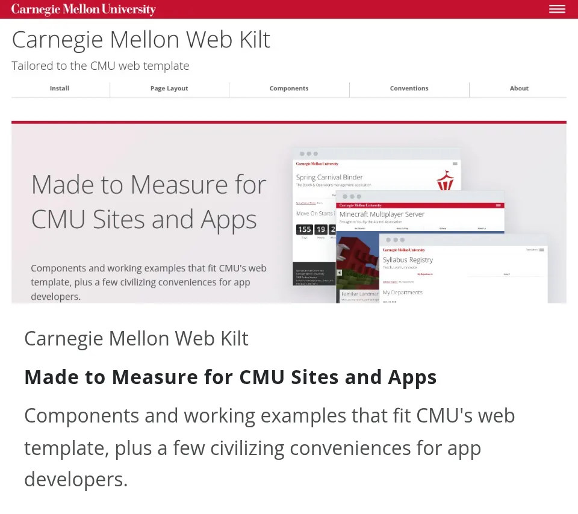

FencePost Reference
How FencePost checks link previews, which sites it can capture and how to use its API, MCP tools and workflow action. The API supports all three tools; MCP supports checking links and generating previews.
On This Page
Open Graph Tags
Open Graph is a set of <meta> tags, first defined by Facebook in
2010, that describe a page to the apps that build link previews: Slack, Teams,
LinkedIn, iMessage and most chat and social apps. Without them, an app guesses, and
often shows only the page's title or a stray image from the page.
Each part of a preview comes from a tag. og:url and
twitter:card work behind the scenes, with nothing on the card to
point at.
-
1. Image
The picture, from
og:image.og:image:altdescribes it for screen readers. -
2. Site Name
The site the page belongs to, from
og:site_name. -
3. Title
The page's name in bold, from
og:title. -
4. Description
A sentence about the page, from
og:description.

1 2 3 4<meta property="og:site_name" content="Classroom Booking">
<meta property="og:title" content="Reserve a Classroom - Classroom Booking">
<meta property="og:description" content="Find a room for a review session or a guest talk, with the seats and screens you need.">
<meta property="og:url" content="https://www.cmu.edu/classrooms/reserve.html">
<meta property="og:type" content="website">
<meta property="og:image" content="https://www.cmu.edu/classrooms/images/preview.jpg">
<meta property="og:image:width" content="1200">
<meta property="og:image:height" content="630">
<meta property="og:image:alt" content="Classroom Booking's home page: Reserve a Classroom, beside a photo of a classroom.">
<meta name="twitter:card" content="summary_large_image">| Tag | What It Is |
|---|---|
og:title, og:description | The bold title and the line under it. |
og:image, og:image:alt | The picture, 1200 × 630 pixels, and its description for screen readers. |
og:url | The page's preferred address, which apps use instead of the exact link someone pasted. |
og:site_name | The site's name, which some apps show with the title. |
twitter:card | summary_large_image asks for the large picture instead of a
thumbnail. |
The Web Kilt's Link Previews / Open Graph page has the full guidance, including how to add the tags in a CMS or an app.
Approved Sites
FencePost works with any public page on cmu.edu or one of its subdomains, and on these sites run by Carnegie Mellon groups:
| Group | Site |
|---|---|
| AB Tech | abtech.org and its subdomains |
| Activities Board | activitiesboard.org and its subdomains |
| Carnegie Tech Radio Club | w3vc.org and its subdomains |
| CMU Buggy Alumni Association | cmubuggy.org and its subdomains |
| CMU Web | cmu-web.github.io |
| Employee Perks | merichar.org and its subdomains |
| Pittsburgh Supercomputing Center | psc.edu and its subdomains |
| Robotics Club | roboclub.org and its subdomains |
| Scotch'n'Soda Theatre | scotchnsoda.org and its subdomains |
| ScottyLabs | scottylabs.org and its subdomains |
| ScottyLabs (TartanHacks) | tartanhacks.com and its subdomains |
| Spring Carnival Committee | springcarnival.org and its subdomains |
| The Tartan | thetartan.org and its subdomains |
| WRCT | wrct.org and its subdomains |
To add a site that isn't on cmu.edu, use the Request a Domain form. FencePost sees only what anyone on the public internet can: it doesn't sign in, and it can't reach pages that work only on campus. For those, upload a screenshot in Generate a Preview.
API
Each endpoint takes JSON and answers with JSON. Images come back as base64; nothing is stored.
| Request | Body | Response |
|---|---|---|
POST /api/check | url, and article: true for a news story or post | What a share would show (title, description,
siteName, image, imageAlt) and
findings, each pass, fix or
note |
POST /api/preview | url and the preview fields | The 1200 × 630 pixel JPEG (image), its title,
description and the tags for the page's head |
POST /api/screenshot | url and kind: card (the default) or
phone, and a delay | Its width, height and title, and
images: the screenshot as WebP, PNG and JPEG, each with its
format, type, file name,
bytes and base64 image |
To try it from a terminal, send a page's address with curl. This example
checks the Web Kilt's home page:
curl -s https://fencepost.andrew.cmu.edu/api/check -H 'Content-Type: application/json' -d '{"url": "https://webkilt.andrew.cmu.edu/"}'
FencePost follows the redirect to /0/ and answers with what a share would
show, then a finding for each check. Shortened, the answer looks like this:
{
"url": "https://webkilt.andrew.cmu.edu/0/",
"title": "Carnegie Mellon Web Kilt",
"siteName": "Carnegie Mellon Web Kilt",
"image": { "url": "https://webkilt.andrew.cmu.edu/0/images/preview.jpg", "width": 1200, "height": 630 },
"findings": [
{ "key": "title", "status": "pass", "text": "The title is \"Carnegie Mellon Web Kilt\"." },
…
]
}Preview Fields
| Field | What It Does |
|---|---|
url | The page, on a site FencePost captures. Required. |
title | Up to 100 characters. Blank uses the page's own title; required with a screenshot. |
description | Up to 220 characters. Blank uses the page's own description. |
site | The site's name, up to 60 characters. |
imagePath | Where you'll save the image; the tags point to it. Default
/images/preview.jpg. |
screenshot | A base64 PNG, JPEG or WebP under 8 MB, used instead of a capture, for a page behind a sign-in. |
delay | Seconds to wait after the page loads before capturing it, from 0 (the default) to 10, for a page with loading animations or delayed images. Whole seconds only. |
MCP Server
Connect an AI agent to FencePost's MCP server with these settings:
| Connection | Value |
|---|---|
| Server Name | fencepost |
| Endpoint | https://fencepost.andrew.cmu.edu/mcp |
| Transport | Streamable HTTP, without sign-in |
It offers these tools:
| Tool | Input | Result |
|---|---|---|
get_guide | No arguments | The preview rules, the approved domains and the fields |
check_link | url | The same as POST /api/check |
generate_preview | url and the preview fields | The JPEG as an image, with the tags and where to save it |
Screenshots are only on the page and the API. A failure returns a tool result marked
isError with the same message the API gives.
WordPress Plugin
FencePost Link Previews, a WordPress plugin, makes each page's preview image for you.
About a minute after a page or post is published or updated, it sends the page's
address and the site's name to POST /api/preview, saves the image in the
media library and uses it for that page. A featured image always wins.
- It works with what the site already has: the Forbes & Moreword theme, Yoast SEO, Rank Math, All in One SEO and SEOPress. With none of them, it writes the image tags itself.
- Pages must be public and on cmu.edu or an approved site. When FencePost can't capture one, the Link Preview column in Pages and Posts says why.
- To make a new one now, select Make a New Preview under the page's title in Pages or Posts.
Download fencepost-wordpress.zip and upload it in Plugins › Add New Plugin › Upload Plugin, or install it with WP-CLI:
wp plugin install https://github.com/cmu-web/cmu-web-fencepost/releases/latest/download/fencepost-wordpress.zip --activateWorkflow Action
FencePost's action, Make Preview Images, makes a site's preview image and screenshots in a GitHub or Forgejo workflow, so they're ready when the site goes live. The workflow builds the site and serves it inside the job, the action captures it there and writes the files, and the workflow publishes them with the site.
-
It captures any address the job can reach, including
127.0.0.1. The site list and the public-only rule are for the FencePost website; the action runs in your own job and never calls it. - It runs FencePost's release container image with Docker, so it works on Linux runners with Docker.
- It writes only the files you name, relative to the workspace.
GitHub
These steps make the preview image for a site built into _site:
- name: Serve the built site
run: |
python3 -m http.server 4000 --bind 127.0.0.1 --directory _site &
until curl -fs http://127.0.0.1:4000/ >/dev/null; do sleep 1; done
- uses: cmu-web/cmu-web-fencepost@0.2.3
with:
url: http://127.0.0.1:4000/
preview: _site/images/preview.jpgForgejo
On Forgejo, name the action by its full address. The job runs in a container, so the
runner has to give it the Docker socket (docker_host: automount under
container in the runner's settings), and the job's image has to include
the Docker command line. The steps are otherwise the same:
- name: Serve the built site
run: |
python3 -m http.server 4000 --bind 127.0.0.1 --directory _site &
until curl -fs http://127.0.0.1:4000/ >/dev/null; do sleep 1; done
- uses: https://github.com/cmu-web/cmu-web-fencepost@0.2.3
with:
url: http://127.0.0.1:4000/
preview: _site/images/preview.jpgInputs and Outputs
| Input | What It Does |
|---|---|
url | The page to capture. Required. |
preview | Where to write the 1200 × 630 JPEG. The default is
images/preview.jpg; leave it blank to skip it. |
card, phone | Where to write a card or mobile view screenshot, the same as Take a Screenshot. The file name's ending picks WebP, PNG or JPEG. |
public-url | The page's published address. With it, the action also returns the Open Graph tags. |
site, image-path | The same as the preview fields, for the tags. |
delay | Seconds to wait after the page loads before capturing it, from 0 (the default) to 10. |
container-image | The FencePost container image to run. The default is the release's; set it to test one the workflow just built. |
Its outputs are title, description, the paths it wrote
(preview, card, phone) and tags.
From a checkout, npm run shoot -- http://127.0.0.1:4000/
does the same on your own computer.
Errors
| Status | Meaning | What to Check |
|---|---|---|
| 400 | FencePost can't use that request. | The address (a full https:// address), the field lengths and the screenshot's type and size. |
| 403 | The site isn't one FencePost captures. | See Approved Sites. |
| 429 | Two captures are already running. | Wait a moment and try again. |
| 502 | The page answered with an error. | The page itself; a 401 or 403 from it means a sign-in, so upload a screenshot
instead. A response with "code": "bot-check" is a Cloudflare bot
check; see Sites Behind Cloudflare. |
| 504 | The site took too long to answer. | Try again; if it keeps happening, upload a screenshot. |
| 500 | Something went wrong in FencePost. | Try again; if it keeps happening, report it on GitHub with a made-up example. |
Every error is JSON with an error message written for the person using
the page, so it can be shown as is.
Sites Behind Cloudflare
Some sites use Cloudflare's bot protection, which answers anything that isn't a full browser with a challenge page instead of the site. FencePost can't get past it, and says so. Apps such as Slack and LinkedIn are usually let through as known bots, so the site's real previews may be fine; FencePost just can't see them.
If you manage the site's Cloudflare settings, let FencePost through with a custom rule:
- In the Cloudflare dashboard, open the site's domain, then go to Security › WAF › Custom rules and create a rule.
-
Match FencePost by its address: IP Source Address equals
128.2.24.46. Its requests also sayFencePost/1.0in their user agent, but anyone can send that, so match the address. - Choose the action Skip, pick the bot protection the site uses, and deploy the rule.
Cloudflare's free Bot Fight Mode can't be skipped by a rule, according to Cloudflare's documentation. A site that uses it would have to turn it off for FencePost to see its pages. Until then, generate the preview from your own screenshot in Generate a Preview.